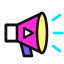

Clip Shoutout
Give another streamer a proper shoutout. When a mod, a VIP or you type !so name in chat,
a comic-book card pops up with their picture, name, link and what they were last playing, and one
of their clips plays in it, picked at random (never the same one twice in a row). Shoutouts given
while one is on screen wait their turn, and someone with no clips still gets the card.
The real overlay with a pretend mod giving a shoutout every few seconds: one with clips, and one for someone who has none. The clips play muted here; in OBS you hear them. On stream the background is transparent, so only the card shows.
Setup guide
Get it on stream
-
Add a Browser source
In OBS click + under Sources → Browser. Paste
https://clips.ixitxachitl.com/as the URL and set it to your full canvas size, usually1920×1080. The background is transparent automatically. Tick Control audio via OBS if you want the clips on their own mixer slider. - Connect your chat Right-click the source → Interact, move your mouse over the overlay and click the yellow gear in the bottom-right corner. Type your Twitch and/or Kick channel name, add TikTok or YouTube if you stream there, and press Save & apply.
- Try it Test shoutout in the settings shouts you out. The box next to the gear shouts out any name you type, and Skip skips the one on screen.
-
Shout someone out
A mod, a VIP or you types
!so namein chat. The card pops up, their clip plays, and it goes away when the clip ends. Give a few at once and they play one after another.
Chat commands
!so name: mods, VIPs and the broadcaster. A shoutout forname(@nameworks too). Who can use it in the settings changes that to just you, mods only, or everyone, and you can let particular people use it too.!soskip: mods and the broadcaster. Skips the shoutout on screen;!soskip allempties the queue as well.- Both can be renamed in the settings, so they won't clash with your other bots.
!so kick.com/name,!so twitch.tv/name,!so kick:nameor!so twitch:nameshout out a channel on the other platform.
Chat sources
Twitch & Kick
Just type the channel name. Chat is read anonymously, and channels and clips are looked up without logging in, so there's no login, bot account or app to set up. Mods and VIPs are recognised by their badges. A shoutout typed in Twitch chat shows a Twitch channel and clip; one typed in Kick chat, a Kick one.
TikTok
TikTok needs a bridge app running on your PC. If you use TikFinity, just type
1 in the TikTok box. Otherwise, paste your bridge's ws://… address.
TikTok has no clips to show, so the name is looked up on Twitch (or Kick: see YouTube &
TikTok shoutouts look up).
YouTube
Paste your live stream's video ID or link, plus a YouTube Data API v3 key from the
Google Cloud Console. You can also give a bridge ws://… address instead. Like
TikTok, the name is looked up on Twitch or Kick.
What you'll see
- A SHOUTOUT! banner over the clip, its title in a yellow caption box, who clipped it and how many views it has, and a progress bar along the bottom.
- A name plate with their picture, name, what they're playing (with a LIVE tag if they're live right now) or last played, their channel link, and a tagline you can change.
- A random clip from their 100 most-viewed, never the same one they got last time (it remembers across restarts). Shorter clips are picked first, and you can stick to their top few or to recent ones.
- A queue: shoutouts given while one is up wait their turn, with a "+2 more" tag on the card. Shout the same person out twice and they get two different clips.
- No clips? If they have none, or the channel can't be found, the card still pops up on its own for a few seconds.
Build a setup link
Settings in the URL
Every setting can also go in the URL, and it overrides what's saved. That's handy for setting up without the Interact window. (The overlay's own Copy setup link button does the same thing.) Fill in what you need and paste the link into your browser source:
ytkey works as a URL parameter too.)
All settings
| Setting | URL parameter | Default | What it does |
|---|---|---|---|
| Chat | |||
| Twitch channel | channel | — | Read anonymously, no login needed. |
| Kick channel | kick | — | Read anonymously, no login needed. |
| TikTok bridge | tiktok | — | 1 uses TikFinity on this PC, or give a ws://… bridge address. |
| YouTube live | youtube | — | Live video ID or link (needs the API key), or a bridge address. |
| YouTube API key | ytkey | — | A YouTube Data API v3 key from the Google Cloud Console. |
| YouTube check every (s) | ytpoll | 6 | Lower is snappier, but uses the daily API quota faster. |
| Demo chat | demo | off | A pretend mod gives a shoutout every few seconds, for trying it out. |
| Shoutouts | |||
| Shoutout command | socmd | !so | Followed by a name: !so somestreamer. |
| Who can use it | who | vips | owner only you, mods, vips mods and VIPs, or everyone. The broadcaster always can. |
| These people can too | allow | — | Names that can give shoutouts whatever who says, comma separated. |
| Skip command | skipcmd | !soskip | Mods and the broadcaster skip the shoutout on screen; add all to empty the queue too. |
| Most waiting in the queue | maxqueue | 10 | Shoutouts past that are dropped. |
| YouTube & TikTok shoutouts look up | lookup | twitch | Where a name shouted out in YouTube or TikTok chat is looked up: twitch, kick or none (just the card). |
| Clips | |||
| Clips from | period | all | all, month, week or day: how recent the clips can be. |
| Only the top N clips | top | 0 | Pick at random from their N most-viewed clips. 0 means any of the 100 most viewed. |
| Longest clip (s) | maxlen | 60 | Clips up to this long are picked first. If all of theirs are longer, one is cut off here. 0 means any length. |
| Video quality | quality | 1080 | The highest quality to play: 1080, 720, 480 or 360. |
| Volume | volume | 80 | 0 to 100. |
| Look | |||
| Position | pos | center | center, top, bottom, tl, tr, bl or br. |
| Size (% of the width) | size | 42 | How wide the card is. |
| Card without a clip (s) | cardtime | 8 | How long a shoutout stays up when they have no clips. |
| Gap between shoutouts (s) | gap | 1.5 | The pause between shoutouts in the queue. |
| Tagline | tagline | Go give them a follow! | The line under the name. {name} is replaced with their name; empty means none. |
| Clip title and who clipped it | title | on | The caption box and the clipper and view count. |
| What they last played | game | on | The game or category under their name. |
| Background (testing) | bg | auto | In a normal browser the overlay shows a dark background so you can see it. bg=none makes it transparent anyway, or give a color like bg=black. In OBS it's always transparent unless you set a color. |
window.clips.shoutout("name", { platform: "twitch" }),
.skip() and .clear().